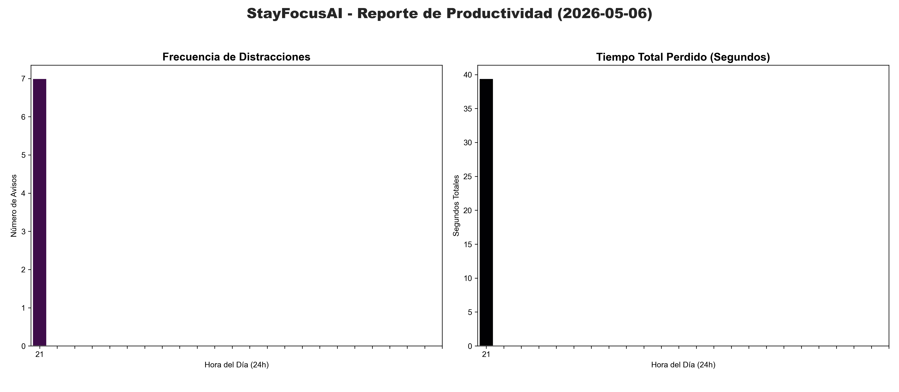

<section class="section projects-section" id="projects">
  <div class="container">
    <div class="section-header">
      <span class="section-subtitle">Mi trabajo</span>
      <h2 class="section-title">Proyectos</h2>
      <div class="section-line"></div>
    </div>

    <div class="projects-grid">
      <a href="partials/projects/tallermate.html" class="project-card">
        <div class="project-image">
          
        </div>
        <div class="project-info">
          <h3 class="project-name">TallerMate</h3>
          <div class="project-tech-icons">
            <i class="fab fa-laravel" title="Laravel"></i>
            <i class="fab fa-angular" title="Angular"></i>
            <i class="fas fa-database" title="MariaDB"></i>
            <i class="fab fa-docker" title="Docker"></i>
          </div>
        </div>
      </a>

      <a href="partials/projects/landing-piscinas.html" class="project-card">
        <div class="project-image">
          
        </div>
        <div class="project-info">
          <h3 class="project-name">Landing Page Piscinas</h3>
          <div class="project-tech-icons">
            <i class="fab fa-react" title="Next.js"></i>
            <i class="fas fa-wind" title="Tailwind CSS"></i>
            <i class="fas fa-triangle" title="Vercel"></i>
          </div>
        </div>
      </a>

      <a href="partials/projects/stayfocusai.html" class="project-card">
        <div class="project-image">
          
        </div>
        <div class="project-info">
          <h3 class="project-name">StayFocusAI</h3>
          <div class="project-tech-icons">
            <i class="fab fa-python" title="Python"></i>
            <i class="fas fa-brain" title="YOLOv8 AI"></i>
            <i class="fas fa-chart-bar" title="Data Analytics"></i>
            <i class="fab fa-docker" title="Docker"></i>
          </div>
        </div>
      </a>
    </div>
  </div>
</section>
